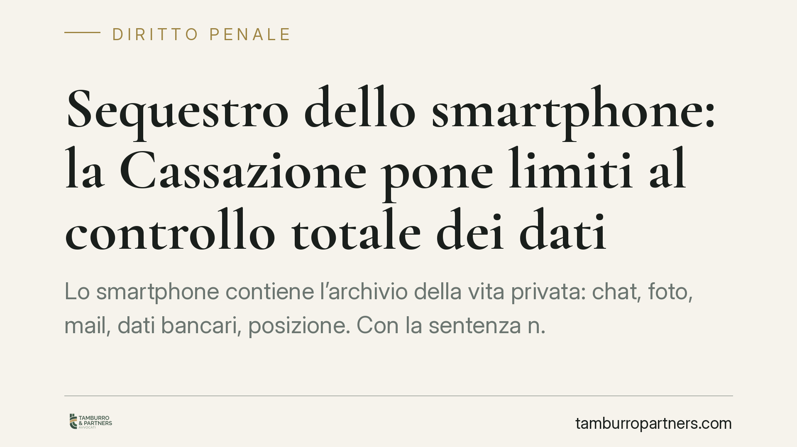

Sequestro dello smartphone: la Cassazione pone limiti al controllo totale dei dati
Lo smartphone contiene l'archivio della vita privata: chat, foto, mail, dati bancari, posizione. Con la sentenza n. 7261/2026 la Cassazione penale stabilisce che la polizia e il pubblico ministero non possono acquisirne l'intero contenuto in modo indiscriminato. Servono criteri di ricerca definiti, selezione del materiale rilevante e tempi certi per la restituzione, in nome del principio di proporzionalità.

Il caso e la decisione
La questione è tutt'altro che teorica. Quando un telefono viene sequestrato nel corso di un'indagine, chi procede ottiene accesso a un volume enorme di informazioni: conversazioni, rubrica, cronologia degli spostamenti, dati sanitari e finanziari, documenti professionali. Spesso materiale che nulla ha a che vedere con il reato ipotizzato.
Con la sentenza n. 7261/2026, la Quinta Sezione penale della Cassazione affronta proprio questo nodo. Il principio affermato è netto: il sequestro del contenuto digitale di un dispositivo non può tradursi in un'acquisizione totale e priva di filtri. L'apprensione massiva di dati, scollegata da un perimetro investigativo preciso, viola il principio di proporzionalità che governa ogni misura cautelare reale.
Inquadramento normativo
Il sequestro probatorio è disciplinato dall'art. 253 del codice di procedura penale: consente di apprendere il "corpo del reato" e le cose "pertinenti al reato" necessarie per l'accertamento dei fatti. La norma richiede dunque un nesso di pertinenza tra la cosa sequestrata e l'indagine.
Il problema è che un telefono è un contenitore. Sequestrare l'oggetto fisico è facile; il tema è cosa si può estrarre e trattenere del suo contenuto. Qui entrano in gioco l'art. 8 della Convenzione europea dei diritti dell'uomo (tutela della vita privata e della corrispondenza) e l'art. 15 della Costituzione (segretezza delle comunicazioni). La Cassazione ancora la propria lettura a questi parametri: la pertinenza prevista dall'art. 253 c.p.p. va intesa in senso stringente anche quando l'oggetto è un archivio digitale.
In pratica, la Corte impone al pubblico ministero tre obblighi. Primo, indicare criteri di ricerca chiari (ad esempio: parole chiave, intervalli temporali, categorie di file collegate al reato contestato). Secondo, delimitare il materiale effettivamente rilevante, restituendo il resto. Terzo, rispettare tempi certi per la restituzione, evitando che il dispositivo o la sua copia integrale restino a disposizione dell'autorità a tempo indeterminato.
Cosa cambia per chi subisce un sequestro
Per l'indagato — ma anche per terzi estranei che si vedano sequestrare il telefono — la pronuncia rafforza strumenti di tutela già esistenti ma spesso sottoutilizzati.
Il decreto di sequestro deve ora reggere un vaglio di proporzionalità più severo. Una motivazione generica, che autorizzi l'acquisizione "di tutto il contenuto del dispositivo" senza specificare cosa si cerca e perché, diventa attaccabile. Lo è davanti al Tribunale del Riesame, l'organo competente a verificare la legittimità della misura su impulso dell'interessato.
La decisione incide anche sui dati non pertinenti già copiati. La copia forense integrale è prassi tecnica diffusa, ma il mantenimento a tempo indeterminato di informazioni estranee al reato non trova più copertura automatica. Si apre lo spazio per chiedere la restituzione o la distruzione del materiale non rilevante.
Resta un punto di realismo: la sentenza non vieta il sequestro del telefono né l'accesso ai dati. Impone metodo e limiti. L'esito concreto dipenderà da come il principio verrà applicato caso per caso, e nessun risultato è scontato.
Cosa fare in concreto
- Chiedete e conservate copia del decreto di sequestro. Verificate se indica criteri di ricerca e perimetro del materiale: una motivazione generica è il primo appiglio difensivo.
- Valutate il ricorso al Tribunale del Riesame nei termini di legge (dieci giorni dalla data di esecuzione): è la sede naturale per contestare l'ampiezza della misura.
- Opponetevi all'acquisizione indiscriminata segnalando per iscritto la presenza di dati coperti da segreto professionale, sanitario o privi di nesso con l'indagine.
- Sollecitate la restituzione del dispositivo e la distruzione delle copie dei dati non pertinenti, una volta esaurita la funzione probatoria.
- Non manomettete né tentate di cancellare contenuti prima o durante il sequestro: la condotta può integrare ipotesi di reato autonome e aggravare la posizione.
Disclaimer
Contributo informativo a cura di Tamburro & Partners - Avv. Giuseppe Tamburro. Non costituisce parere legale.
Ogni condominio ha una storia a sé.
Se gestisci un'amministrazione e vuoi un confronto su una specifica questione condominiale, scrivi allo studio. Ti rispondiamo entro un giorno lavorativo.